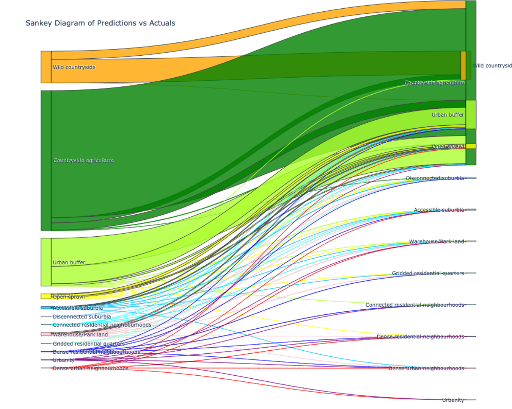
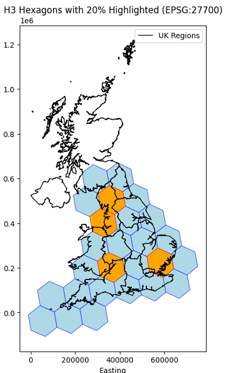

EuroFab Progress Meeting
2024-12-06
Milestone meeting
- Introduction & status update
- Milestone 1 deliverables:
- Technical Note D3 - Reference Data Selection
- Technical Note D2 - Algorithm Design and Theoretical Basis Description
- Technical Note D1 - Consolidated Stakeholder Requirements Specification
- Discussion
- Other
Status update

Timeline
Technical Note D3
Reference Data Selection
Morphological data
- Morphometric classification of Central Europe (UPDATE)
- Microsoft Building footprints
- Overture Maps streets
- Implementation
Morphometric classification of Central Europe
- It is based on cadastre building data (NEW) !
- Processed from official APIs for all five countries
- New data has ~11 million more buildings than EUBUCCO
- Quality checks are still pending
- Uses Overture streets, therefore there will be some shared data between the classifications, making the model inference easier

Example detailed classification

Example coarser detailed classification
Problems with existing datasets - EUBUCCO, etc..

Lots of missing and undocumented processed data
Problems with cadastre data - Germany, Poland, etc..

Wrong and undocumented information - CRS, type, year, rate-limited APIs
Microsoft Building footprints
- Cover a large part of the globe - 1.5 billion building footprints.
- Available for the study region, whereas other sources such as Google footprints are not.
- Homogeneous origin - all footprints are derived using the same model.
Examples

Good coverage, but quality drops some places
Overture Maps streets
- OpenStreetMap data with minimal processing, therefore it has good coverage
- The ground truth morphometric classification uses it
The street network is simplified, preserving its topology, but removing unnecassary clutter
Examples

Street processing
Overall data
- Based on the preliminary results, there are 56,845,150 Microsoft building footprints for our study area, which are split into 474 subregions.
- This is significantly less than the available cadastre data, which has around 88 million buildings and are separated into 828 regions.
- The number of downloaded, unprocessed streets is similar to those in (Fleischmann and Samardzhiev Forthcoming) - 23,332,865
Satellite data
- Sentinel-2 composite (Corbane et al.), RGB, 10px/m
- temporal/spatial flexibility
- analysis-ready; cloud-free
- suitability for downstream ML tasks
Urban fabric classes
- Spatial signatures framework (Arribas-Bel & Fleischmann 2022)
- Proxy due to its conceptual alignment with urban characterization

Technical Note D2
Algorithm Design and Theoretical Basis Description
Morphometric Classification Homogenisation Protocol
Protocol design
Model protocol
Protocol design
- Use morphometric classification of Central Europe from a parallel research project as ground truth data
- Calculate morphometric characters on subpar, but homogenous and widely available data, using enclosed tessellation cells (ETCs) as the base unit of analysis
Subregions
Enclosures

Nodes

Tessellation cells
63 calculated morphometric characters

Building area in Krakow
Protocol design
- Train a supervised model to predict the classification of ETCs directly from the calculated morphometric characters, using the morphometric classification data as a target label

Evaluation setup

Spatial Split
Spatial Split zoom
First iteration results
Predictions with an accuracy of ~ .68
Satellite images model
Overview
Classification vs Segmentation
- Classification: Single label per tile
- Segmentation: Pixel-level classification
Experiments
Overall approach comparison
- A: Baseline (embeddings + ML model)
- B: Segmentation (fine-tuned Clay model)
- C: Classification (fine-tuned Clay model)
→ choose final model approach
Model adaptations (baseline approach)
- Variation of baseline (ordinal)
- Smaller tile size
- Sampling method experiments
Data Preprocessing
Segmentation dataset
- 224 x 224 pixel tiles
- Train: 21,402 tiles; Test: 5,351 tilesClassification dataset
- 56 x 56 pixel tiles
- Train: 342,648 tiles; Test: 61,074 tilesChallenges
Class imbalance
- Uneven distribution across urban fabric classes
Shared train/test split
- Ensures consistent comparison between tasks (segmentation/classification)


Model Architectures
Approach A: Baseline Embedding
Pipeline
- Generate embeddings (SatlasPretrain model)
- Predict classes using XGBoost
- Pipeline

- Enhancements
- Added spatial context using H3 hex lat/lon

Approach B: Segmentation Models
Fine-tuned three models
- Satlas: SwinT; 302M labels
- Clay: MAE/ViT; 70M labels
- Prithvi: MAE/ViT; 250PB data
Recap
| Metric | Satlas | Clay (Best) | Prithvi |
|---|---|---|---|
| Weighted Accuracy | 0.57 | 0.72 | 0.62 |
| IoU | 0.33 | 0.58 | 0.41 |
| F1 Score | 0.41 | 0.69 | 0.58 |
| Training Time (epoch) | 9 min | 8 min | 20 min |
→ Clay model outperformed other models
Clay model
→ trained with focal loss
Approach C: Classification
- Fine-tuned Clay model for classification task
- Dataset: 56 x 56 px tiles
Evaluation metrics approach comparison
Pixel-level comparison
- F1 Score: Balance between precision and recall, highlighting overall model performance for all classes.
- Macro Accuracy: Averages accuracy across classes, treating each class equally regardless of size.
- IoU: Quantifies the overlap between predicted and true regions, indicating segmentation accuracy.
| Approach | Global Ac. | Macro Acc. | F1 Score | IoU |
|---|---|---|---|---|
| A: Class. (embed.) | 0.76 (0.66) | 0.22 (0.13) | 0.23 | 0.63 |
| A: Class. + H3 lvl 5 | 0.87 (0.82) | 0.42 (0.35) | 0.45 | 0.79 |
| B: Seg. (Clay) | 0.73 | 0.31 | 0.30 | 0.58 |
| C: Class. (Clay) | 0.59 (0.68) | 0.09 | 0.12 | 0.38 |
Comparison of approach B & C
- Overprediction of dominant class
- Segmentation boundaries

- Key Findings:
- Embedding model (baseline) outperformed fine-tuned foundation model approaches
- Clay model outperformed others in segmentation
- Challenges:
- Handling class imbalance
- Segmentation: non directly visual boundaries in images
Additional model adaptations (baseline model)
- Ordinal approach
- Tile size
- Sampling experiments
Ordinal approach
Signatures are not strictly categorical (some are closer than other ones)
ordinal_mapping = {
'Wild countryside': 0,
'Countryside agriculture': 1,
'Urban buffer': 2,
'Open sprawl': 3,
'Disconnected suburbia': 4,
'Accessible suburbia': 5,
'Warehouse/Park land': 6,
'Gridded residential quarters': 7,
'Connected residential neighbourhoods': 8,
'Dense residential neighbourhoods': 9,
'Dense urban neighbourhoods': 10,
'Urbanity': 11,
}Ordinal approach
- Mean Absolute Error: 0.28
- Mean Squared Error: 0.28
- R² Score: 0.62

Comparison of baseline approaches
| Approach | Global Acc. | Macro Acc. | F1 Score | IoU |
|---|---|---|---|---|
| A: Class. (embed.) | 0.76 (0.66) | 0.22 (0.13) | 0.23 | 0.63 |
| A: Class. + H3 lvl 5 | 0.87 (0.82) | 0.42 (0.35) | 0.45 | 0.79 |
| A: Class. + H3 + ordinal | 0.80 (0.80) | 0.26 (0.26) | 0.26 | 0.69 |
Varying tile size
- Motivated by more useful tile size for policy applications
- Map creation (less missing data)
- 25 x 25 px tiles (250x250m)
Varying tile size
| Tile size | Model | Global Acc. | Macro Acc. | F1 |
|---|---|---|---|---|
| 56x56 | Class. (embed.) | 0.76 | 0.22 | 0.23 |
| 56x56 | Class. (embed.) + H3 lvl 5 (cat) | 0.87 | 0.42 | 0.45 |
| 56x56 | Class. (embed.) + H3 lvl 5 (lat/lon) | 0.87 | 0.39 | 0.42 |
| 56x56 | Class. (embed.) + H3 lvl 5 ordinal | 0.80 | 0.26 | 0.26 |
| 25x25 | Class. (embed.) | 0.73 | 0.31 | 0.30 |
| 25x25 | Class. (embed.) + H3 lvl 5 (lat/lon) | 0.81 | 0.46 | 0.53 |
Sampling experiments
| Random Sampling | H3 Split (Resolution 3) |
|---|---|
| Ensures diverse samples but risks spatial leakage, overestimating performance. | Reduces spatial leakage for realistic generalization but may under/over-sample signature types. |
| Benefits training diversity but may inflate results due to proximity of train/test data. | Highlights spatial independence but may penalize heterogeneity within regions. |
Sampling experiments
Random sampling


Regional sampling (H3)
- train: blue
- test: orange

Sampling experiments
Currenty investigating!
Model choice based on objective
Goal
- Local prediction: random sampling might align better with your objectives, as it focuses on learning detailed local variations.
- Regional or global prediction: regional splitting might be more suitable because it ensures the model learns broader generalization patterns.
→ Deployment on all data in the end; (sampling only for reporting accuracy)
Next steps
- Train final model on all 25x25 tiles (embeddings)
- Embeddings model + H3 level 5 lat/lon
- Product: Prediction pipeline
- Make predictions across time (years)
Technical Note D1
Consolidated Stakeholder Requirements Specification
Stakeholder consultation events
URBIS 24 (September)
Looking at urban challenges and innovative EO-integrated solutions, by bringing together urban policymakers, Earth Observation researchers, service providers and various end-users.
World Urban Forum (November)
Convened by UN-Habitat, the Forum is a high level, open and inclusive platform for addressing the challenges of sustainable urbanisation.
Stakeholders involved
- International
- National
- Local
Representing both public and private sectors.
International
- European Covenant of Mayors
Interest in addressing unmet data needs for energy and climate applications: interview to COM staff + either interview to selected members of CoM or survey.
National
- SSVA (Construction Sector Development Agency of the Ministry of Environment, Lithuania)
Interest in classifying Lithuania into morphological types and being engaged also in the validation stage.
Local
- Prague’s Institute for Planning and Development (IPR) (Czechia)
- 4ct (Czechia)
Future engagements
- December 16 (SSVA) - online
- End of January (IPR) - in person
- January 28 (4ct) - in person
Questions
- How will the project address the issue of trust identified during stakeholder discussions, particularly regarding the adoption of shared terminology and concepts for urban fabric monitoring?
- What strategies are planned to identify and incorporate unexpressed or latent needs of prospective data users into the stakeholder requirements mapping process?
Comments